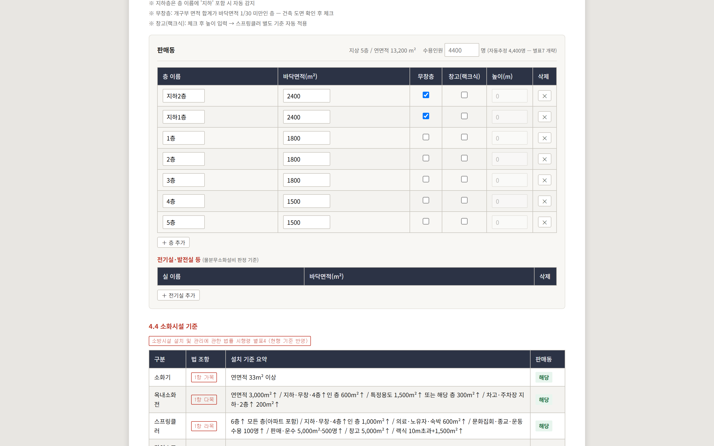
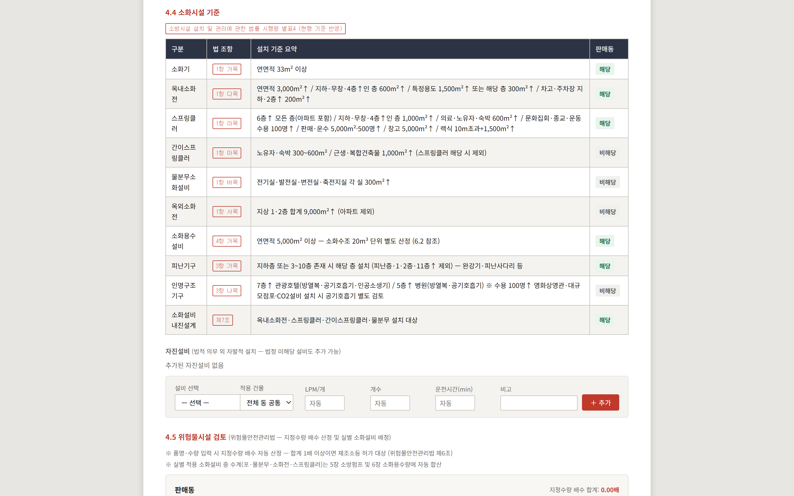
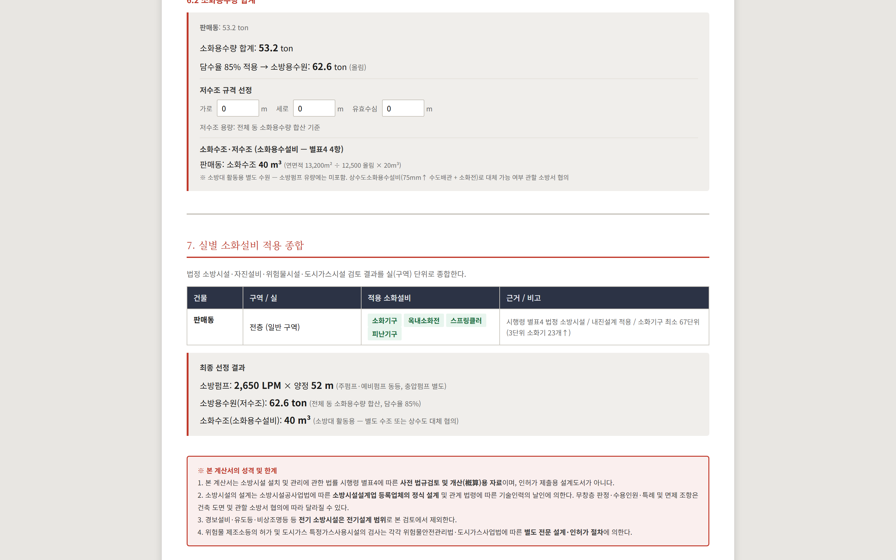

소화설비 법규검토 · 설계기준
용도와 규모를 입력하면 소화설비 설치 대상 여부를 판단하고, 소요유량과 소화용수량, 펌프 선정까지 이어서 산정합니다.
현행 기준이 앱에 반영되어 있습니다. 입력만 하세요.
무엇이 대체되나
입력
특정소방대상물 용도를 고르고 건물마다 층을 추가합니다. 층 라벨과 면적, 무창층 여부만 넣으면 됩니다. 내화구조를 체크하면 소화기 능력단위가 2배 완화되어 반영됩니다.

🔍 클릭하면 크게 볼 수 있습니다
특정소방대상물
용도 선택
공동주택 · 판매 · 의료 · 창고 등
건물 여러 동
동시 검토
동별로 판정이 나뉩니다
판정
시행령 별표4 기준으로 설비별 해당 · 비해당이 판정됩니다. 옆에는 법 조항과 설치 기준 요약이 함께 표시되어, 왜 그렇게 판단했는지를 검토서에 그대로 옮길 수 있습니다. 법적 의무가 아닌 자진설비도 따로 추가할 수 있습니다.

🔍 클릭하면 크게 볼 수 있습니다
판정 대상 설비
10종 이상
소화기 · 옥내외소화전 · SP · 물분무 · 피난기구
판정 근거
조항 표시
1항 가목 · 3항 나목 …
집계
실별 적용 소화설비가 종합표로 정리되고, 수계 설비는 소요유량 · 수원량 · 펌프 양정으로 합산됩니다. 소화용수설비는 펌프 유량에서 빼고 소화수조 20㎥ 단위로 따로 산정합니다. 위험물 지정수량 배수와 도시가스 월사용예정량 검토도 같은 화면에 있습니다.

🔍 클릭하면 크게 볼 수 있습니다
소화수조
20㎥ 단위
펌프 유량과 분리 산정
위험물 · 도시가스
함께 검토
허가 · 예방규정 대상 판정
작동 모습
연출된 시연 장면입니다(수치는 예시). 실제로 검토해 보려면 무료로 바로 쓰기.